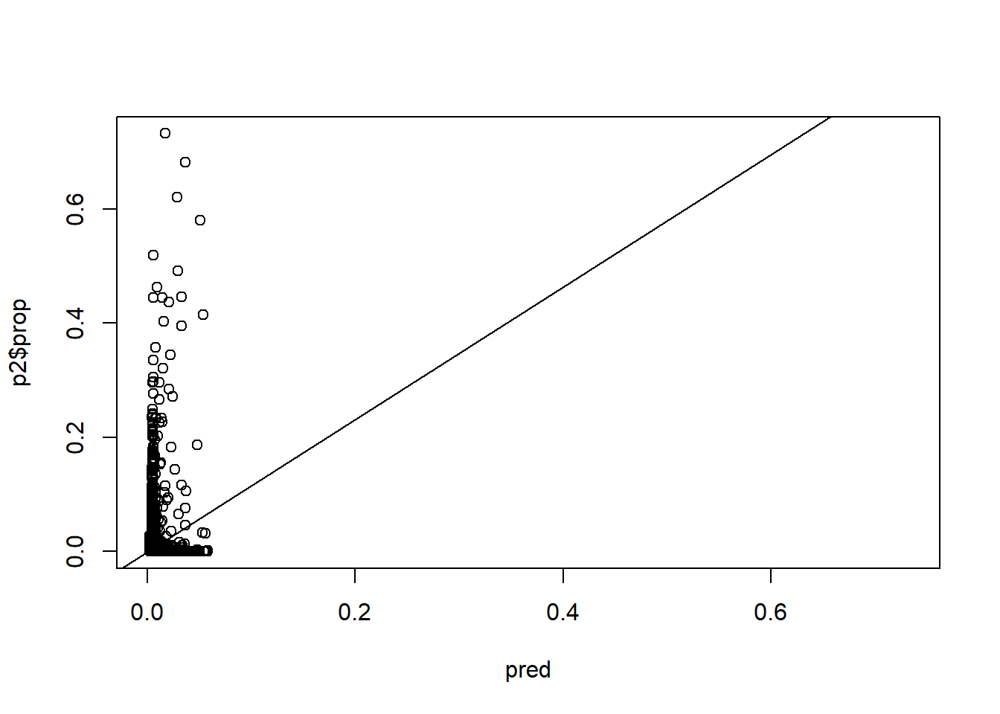

This vignette provides example code for estimating fire probability from ALFRESCO outputs at point locations as well as an assessment of the estimates. It is broken down into three main sections:
There is an inherent challenge in estimating various fire statistics and spatial point locations with ALFRESCO. While it generates spatially explicit wildfire simulations, it is not meaningful to talk about, say, the likelihood of fire over some future projected time period at a single point in space. Statements based on such spatial precision are generally not robust or defensible.
However, there are ways to approximate point-specific fire projections that are relatively robust and stable. A simple approach is to place a buffer of some radius r around a point location and make statements about projected fire in this area. There is a trade off involved. The goal is to make the area around a point large enough that nearby fire events intersect it and estimates are not highly volatile, while also making sure it area is still small enough to justifiably represent point data. This is a challenging needle to thread, with no clear, single answer regarding area size. A more rigorous approach involves selecting a larger area around a point location, but applying some function or model using inverse distance weighting so that fire at greater distances from the point is given less weight.
The latter approach is used here. While ALFRESCO provides spatially explicit maps of simulated fire scar perimeters, this in and of itself does not directly translate into any estimate of the likelihood of fire at a specific point. The closest one can get with this raw simulation output is to make a binary statement that says a location will or will not burn. This does not take into account, for example, the difference in likelihood of fire at one point where a large fire is nearby (even if not intersecting the point itself) vs. at another point where there is no fire within some large distance of the point. The approach used here allows for a smoother estimation of fire probability at a point by accounting for how close and how large nearby fires are. When ALFRESCO simulates a burn in some area on a map, it is meaningful and informative to account for proximity rather than to treat projected burns as having some kind of realistic exactness in space.
Using the JFSP project simulation outputs, take a random sample of points and estimate fire probabilities at each. The code below uses a random sample (n = 100) among all climate models, emissions scenarios, projected years 2014 - 2099, simulation replicates, and fire management treatment levels. This yields 5,000 observations.
This analysis uses outputs from the JFSP project so sampling must be done on the applicable spatial domain. Sample 30 point locations from within the JFSP flammability domain using the snapgrid package.
library(snapgrid)
library(raster)
library(dplyr)
set.seed(976)
cells <- sample((1:ncell(swflam))[!is.na(swflam[])], 30)
places <- xyFromCell(swflam, cells) %>% as_data_frame()Next sample 1000 simulated fire scar perimeters maps from JFSP ALFRESCO projected outputs. The code below takes a random sample of simulated projected fire scar maps with replacement from among three RCPs, five GCMs, two fire management treatments, 32 simulation replicates, and a series of 94 years.
library(alfresco)
base_path <- "/big_scratch/shiny/Runs_Statewide/mfleonawicz@alaska.edu"
paths <- file.path(list.files(base_path, pattern = "^fmo.*.rcp", full.names = TRUE),
"Maps")
n <- 1000
years <- sample(2014:2099, n, replace = TRUE)
reps <- sample(0:31, n, replace = TRUE)
runs <- sample(paths, n, replace = TRUE) # random run (rcp, model, fmo)
sample_files <- purrr::map(c(scar = "/FireScar", veg = "/Veg", age = "/Age"),
~paste0(runs, .x, "_", reps, "_", years, ".tif"))Below are results of the probability estimation. The table p contains 1,000 observations at each of 30 locations. Each observation includes the estimated fire point probability, the unweighted simple area proportion burned for comparison, and an average age, distance to, and total local area covered by each vegetation type. This includes ALFRESCO output grid cells classed as “no vegetation” (mountains, lakes, ocean, etc.).
Note: This processing should be done on one of SNAP’s Atlas compute nodes.
p <- purrr::map(1:n, ~point_probs(r = sample_files$scar[.x], places, 1:30, veg = sample_files$veg[.x],
age = sample_files$age[.x], lonlat_to_akalbers = FALSE)) %>% bind_rows()The above table of sampled observations can be used to construct an initial exploratory statistical model of the relationship between fire probability and other variables. This is why vegetation type and age maps were included along with fire scar maps in the call to point_probs. While it is useful to estimate point probabilities based on proximity and size of nearby fires, distance to fire should nevertheless be viewed as a consequence of other drivers.
Below, gradient boosting (generalized boosted regression models, or GBM) is used to fit models of fire probability as a function of distance to and relative area covered by distinct vegetation types. The ALFRESCO simulations account for differing vegetation flammability, which are actually based originally on vegetation-specific GBMs that model the linkage between climate and fire. Here, GBM is used to explore the functional space associated with the linkage between the distance-weighted derived fire probability metric at point locations and the surrounding nearby vegetation composition.
A guided exploratory model selection using other covariates than distance to fire is performed to model the fire probability and determine the most influential exploratory variables. Note that the observations in p are randomized before passing to gbm. A 50% test set is also withheld from the model. This is in addition to the fact the gbm will use it’s own 50/50 bagging, 50/50 train/test set split, and 5-fold cross-validation. This separate 50% test set is treated as new data used for making new predictions.
library(gbm)
p <- sample_n(p, nrow(p))
n <- floor(nrow(p)/2)
p1 <- slice(p, 1:n)
p2 <- slice(p, seq(n + 1, length.out = n))
gbm1 <- gbm(prop ~ ., data = select(p1, -c(1, 3, 20)), distribution = "gaussian",
n.trees = 5000, shrinkage = 0.01, bag.fraction = 0.5, train.fraction = 0.5,
n.minobsinnode = 10, cv.folds = 5, interaction.depth = 3)
best <- purrr::map_int(c("test", "cv"), ~gbm.perf(gbm1, method = .x, plot.it = FALSE))
summary(gbm1, n.trees = best[2], plotit = FALSE)
#> var rel.inf
#> `Black Spruce area` `Black Spruce area` 27.6005617
#> `White Spruce age` `White Spruce age` 19.0275074
#> `White Spruce area` `White Spruce area` 8.9183341
#> `Alpine Tundra distance` `Alpine Tundra distance` 8.2628652
#> `No vegetation distance` `No vegetation distance` 7.4032512
#> `Alpine Tundra age` `Alpine Tundra age` 7.2889531
#> `White Spruce distance` `White Spruce distance` 6.5076124
#> `Black Spruce age` `Black Spruce age` 3.7194904
#> `Deciduous area` `Deciduous area` 2.7911202
#> `Deciduous age` `Deciduous age` 1.9389782
#> `Black Spruce distance` `Black Spruce distance` 1.9207409
#> `Deciduous distance` `Deciduous distance` 1.5706903
#> `Alpine Tundra area` `Alpine Tundra area` 1.5454410
#> `No vegetation area` `No vegetation area` 1.4440036
#> `Shrub Tundra age` `Shrub Tundra age` 0.0604501
#> `Shrub Tundra distance` `Shrub Tundra distance` 0.0000000
#> `Graminoid Tundra distance` `Graminoid Tundra distance` 0.0000000
#> `Wetland Tundra distance` `Wetland Tundra distance` 0.0000000
#> `Shrub Tundra area` `Shrub Tundra area` 0.0000000
#> `Graminoid Tundra area` `Graminoid Tundra area` 0.0000000
#> `Wetland Tundra area` `Wetland Tundra area` 0.0000000
#> `Graminoid Tundra age` `Graminoid Tundra age` 0.0000000
#> `Wetland Tundra age` `Wetland Tundra age` 0.0000000
pred <- predict.gbm(gbm1, p2, best[2])
rng <- range(c(p2$prop, pred))
plot(pred, p2$prop, xlim = rng, ylim = rng)
lm1 <- lm(p2$prop ~ pred)
lm1
#>
#> Call:
#> lm(formula = p2$prop ~ pred)
#>
#> Coefficients:
#> (Intercept) pred
#> -0.001201 1.161677
abline(lm1)
sqrt(mean((p2$prop - pred)^2))
#> [1] 0.02392537Given the findings of the statistical models, perform a sensitivity analysis based on a simple 2-factor experimental design setup. Then build a final statistical model, calibrate the probability estimation, and apply it to some points of interest.
library(snaplocs)
places <- get_coords(c("Fairbanks", "Galena", "Fort Yukon"), keep_cols = TRUE) %>%
slice(1:3)
places
#> # A tibble: 3 x 4
#> Location Group lon lat
#> <chr> <fctr> <dbl> <dbl>
#> 1 Fairbanks Alaska -148 64.8
#> 2 Fort Yukon Alaska -145 66.6
#> 3 Galena Alaska -157 64.7Document under development…